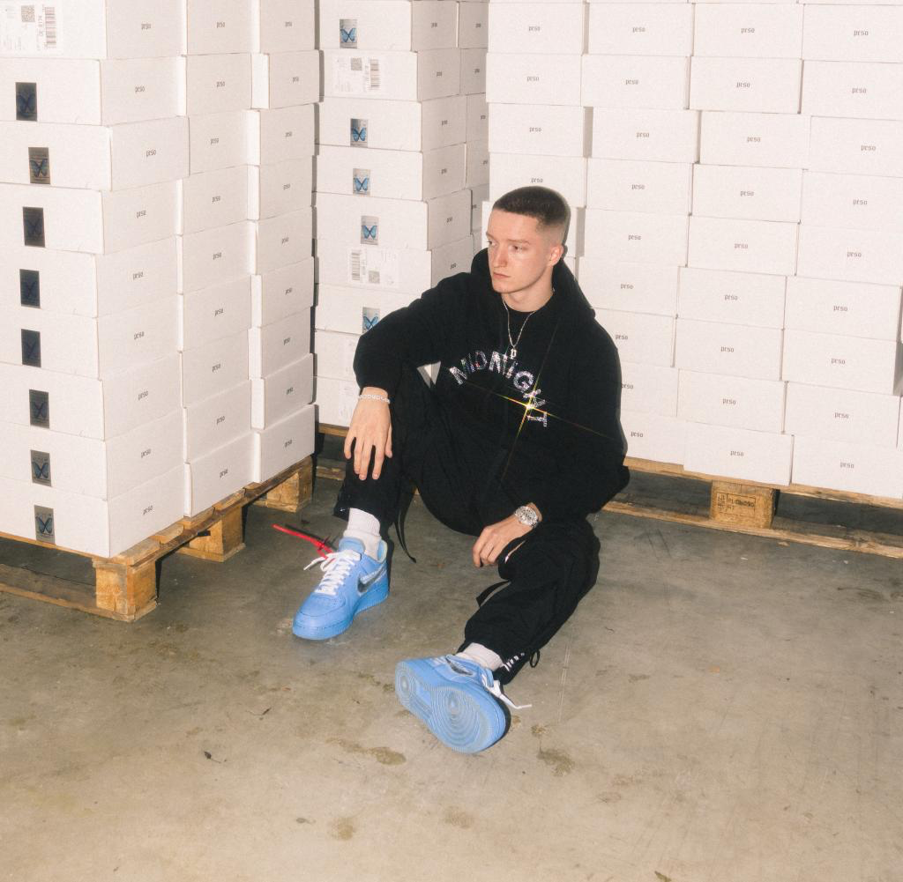

Bio
Justin Fuchs ist ein Urgestein in der Youtube-Szene. Viele der verfügbaren Genres hat er schon durchgespielt. Zuerst versuchte er sich im Bereich des Fx/Design, dabei arbeitete er auch mit sehr berühmten Persönlichkeiten wie Simon Unge zusammen. Als nächstes geriet er in das Genre des Gamings, um genauer zu sein, lud er Minecraft-Videos hoch. Irgendwann bekam er auch davon genug und begann mit seinem dritten Kanal. Auf diesem Kanal geht er vor allem auf das Thema Fashion ein und gibt auch Einblicke in die Entwicklung seiner Modemarke.
